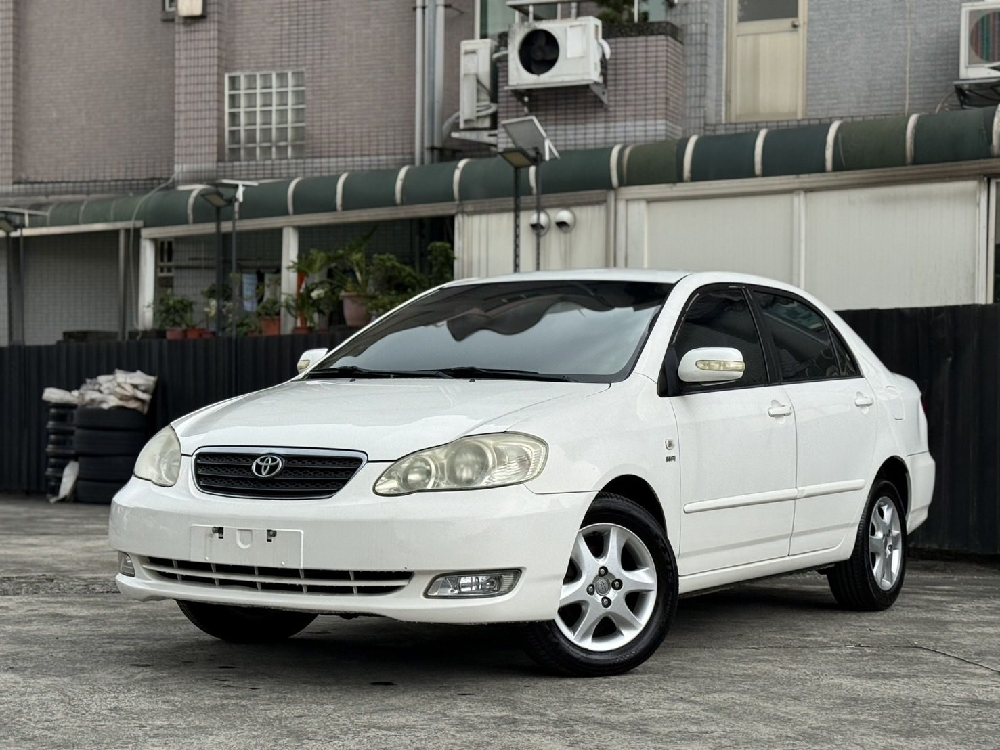
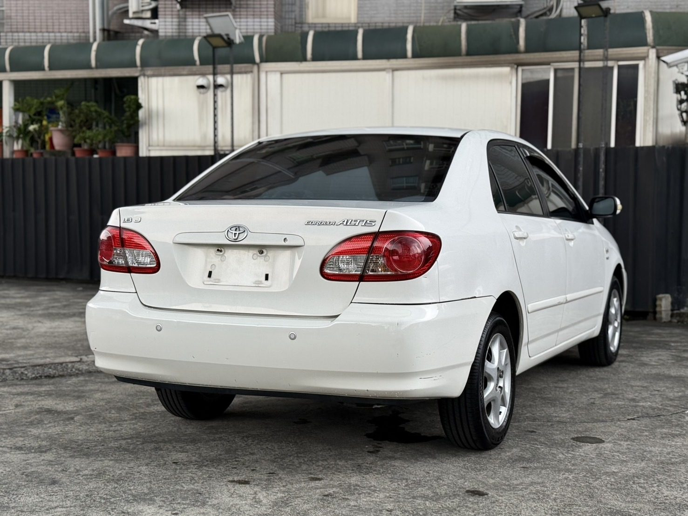
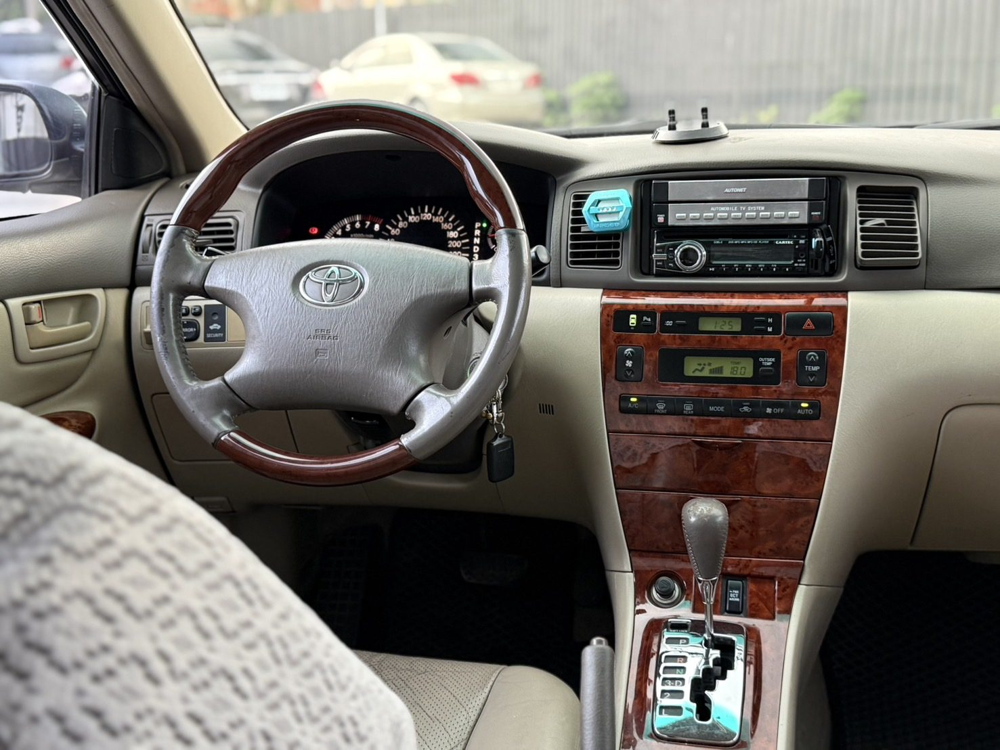
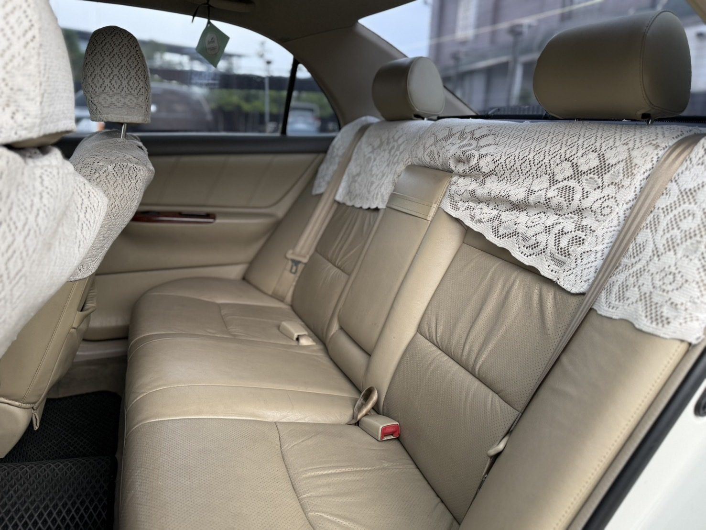
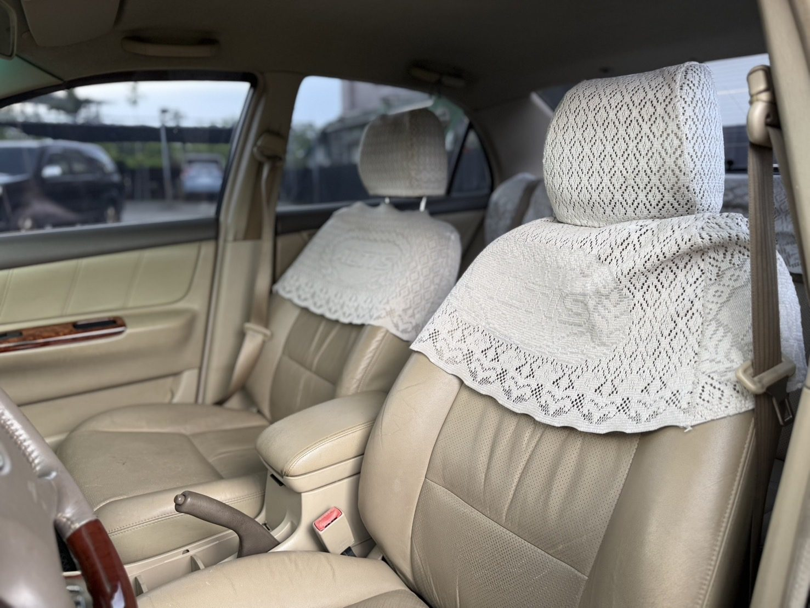
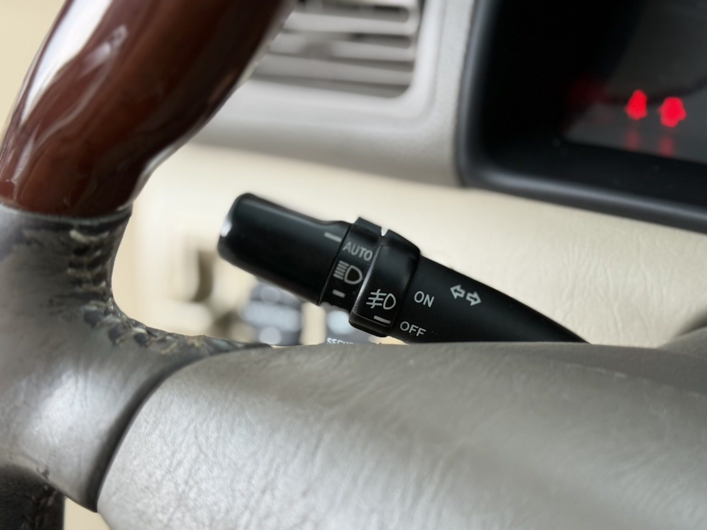
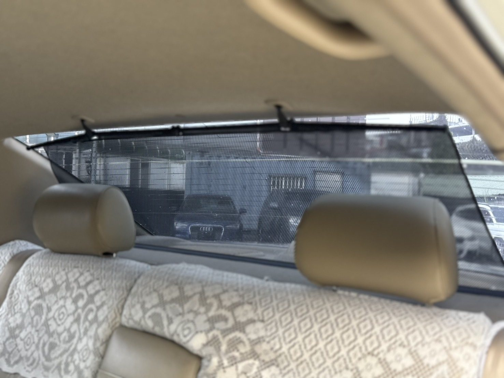
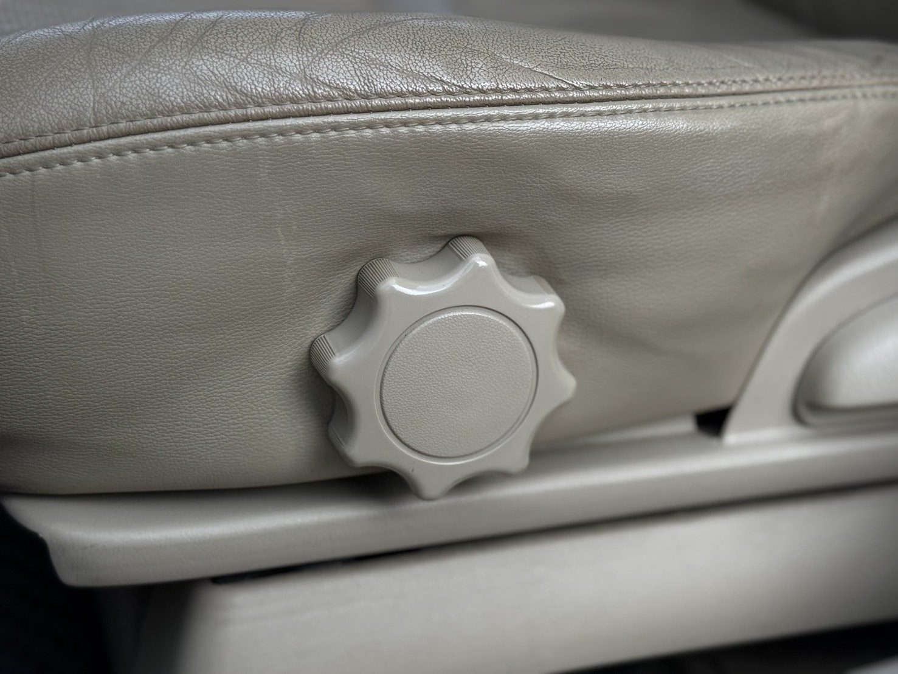
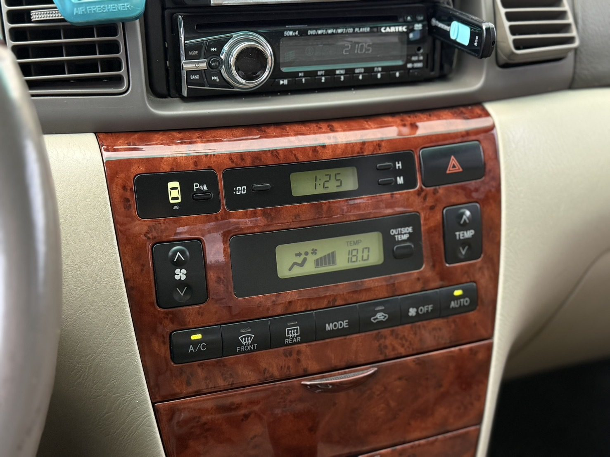
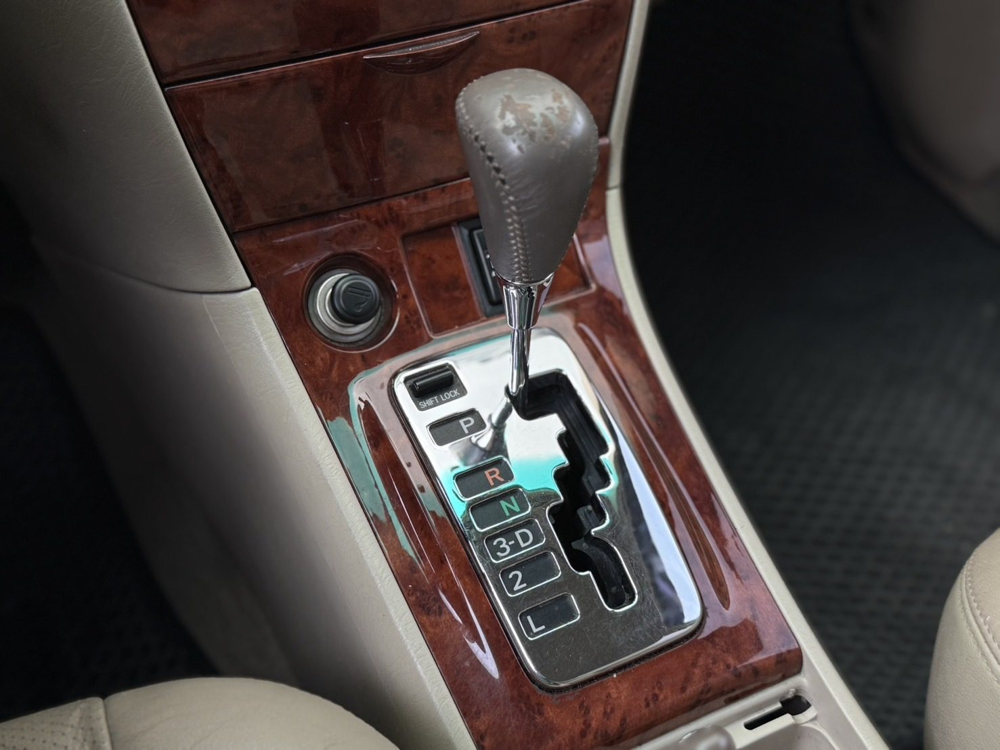

💰 售價：6.5萬
📅 年份：2005年
🛣️ 里程：30萬公里
🚗 排氣量：1.8L
📄 牌照稅+燃料稅：11,920元/年
✅ 可認證
✅ 無重大事故
✅ 無泡水
✅ 引擎安靜
✅ 底盤扎實
✅ 冷氣超冷
【配備】
✔ 定速巡航
✔ 真皮座椅
✔ 電動駕駛座
✔ 數位恆溫空調
✔ 後擋電動遮陽簾
✔ 木紋方向盤
✔ 木紋中控飾板
✔ 倒車雷達
✔ 電動後視鏡
✔ 前霧燈
Altis 一直都是台灣最受歡迎的國民房車之一，
保養維修便宜、零件取得容易，
非常適合代步、通勤以及新手入門。
這台車況漂亮，
引擎運轉安靜，
底盤扎實無異音，
冷氣冰冷，
買回去即可正常使用。
買漂亮車靠緣分，
有緣就放心交給小宋。